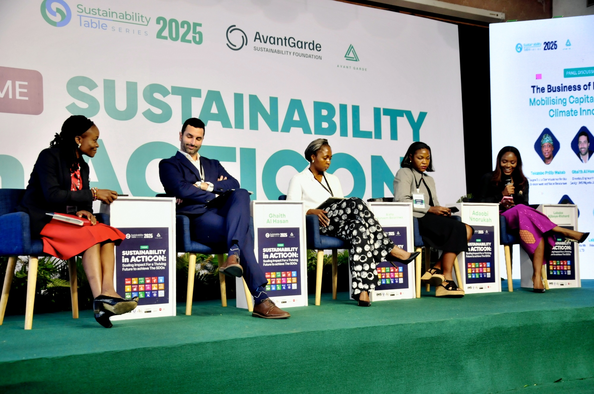
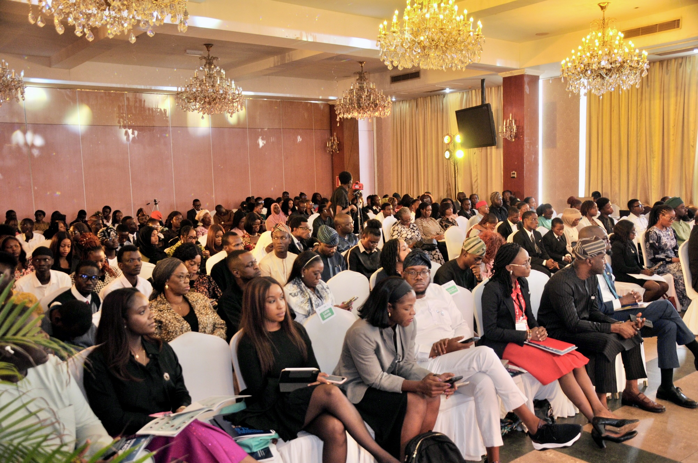
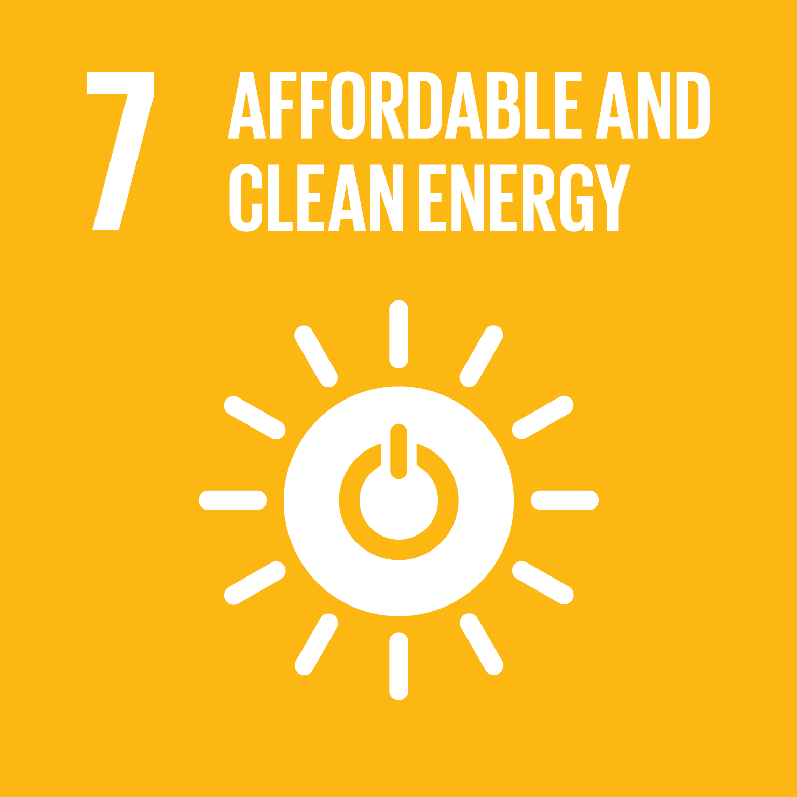
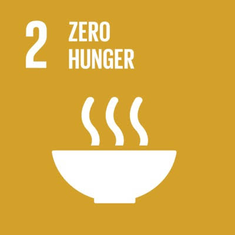
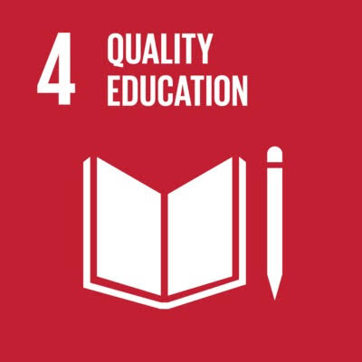
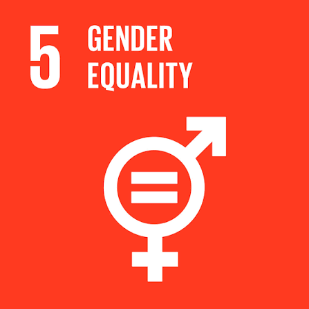
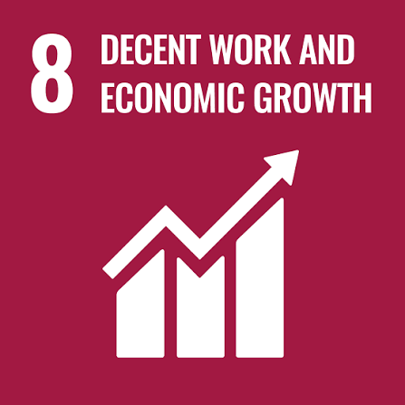
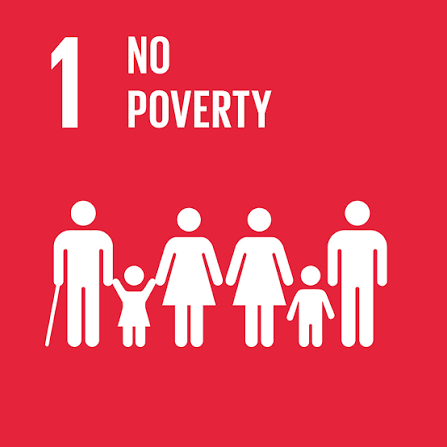
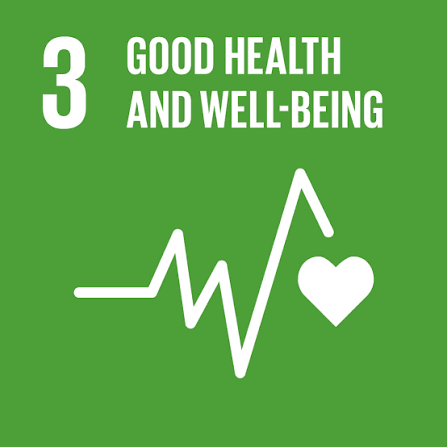

About STS
Africa's leading multi-stakeholder platform for sustainable development discourse, convened by the Avant-Garde Sustainability Foundation.
About STS
The Sustainability Table Discourse Series (STS) is a leading multi-stakeholder platform advancing sustainable development in Nigeria and beyond. Convened by the Avant-Garde Sustainability Foundation, STS brings together policymakers, business leaders, civil society, the academic community, development partners, and innovators to address critical challenges across environmental, social, and governance (ESG) priorities.
Since 2016, STS has grown from a focused roundtable into a nationally and regionally recognized annual summit, influencing public discourse and shaping policy and private sector priorities around the Sustainable Development Goals (SDGs). Each year, STS presents a timely, solution-driven theme aligned with global and regional agendas, including the UN SDGs, COP outcomes, and continental development frameworks. The series fosters dialogue, partnerships, and action, creating measurable impact across sectors.
As STS prepares for its 10th edition in 2026, the platform remains committed to highlighting African priorities, amplifying emerging voices, and supporting the bold transitions needed for a sustainable, inclusive, and resilient future.


Our Pillars
The thematic areas that guide our work and shape the conversations at every edition of STS.
Climate Action and Resilience
Sustainable Waste Management and Circular Economy
Food Security and Sustainable Agriculture
Environmental Security, Justice, and Remediation
Renewable Energy Transition and Access
Eco-Innovation and Green Technology Solutions
Ethical Governance and Strategic Leadership for Sustainability
Advancing Gender Equality in Sustainable Development
Sustainable and Inclusive Job Creation
Unlocking Climate Financing for Scaled Impact
Our Milestones
- Green Economy Opportunities
- Advocacy & Multi-Stakeholder Engagement
- Sustainable Finance & Long-Term Value
- Climate Action and Environmental Justice
- Eco-Innovation in a Green Economy
- Ethical and Strategic Leadership in a Green Economy
- Food Security and Climate Change
- Climate Financing
- Gender Equality
- Digital Inclusion & Education
- Youth & Digital Skills Development
- Broadband as a Critical National Infrastructure
- Sustainable Job Creation
- Sustainability in Corporate Leadership
- Climate Adaptation, Resilience, and Mitigation
- Opportunities Available in a Circular Economy
- Sustainable Development Goals and the Fourth Industrial Revolution (4IR)
- Effective Electronic Waste Management
- Flooding, Climate Change, and Environmental Justice
- The Significance of Expanding Green Finance in Times of Global Goals
- Mobilising Finance for SDGs
- Decarbonization Strategies
- SDGs and Economic Reforms
- Circular Economy Powered by 4IR Technologies
- Effective Management of E-Waste and Resources
- The Orange Economy as a Driver of Sustainability
- Youth and Gender Inclusion in Sustainability
- Innovating for Climate Resilience: Policies, Technology and Local Solutions
- Beyond Net Zero: The Future of Carbon Capture, Storage, and Utilization
- Sustainable Infrastructure: Building Climate-Resilient Cities and Communities
- Blended Finance for Sustainability: Public Private Partnership for Impact
- The Business Case for Sustainability: ESG as a Driver for Competitive Advantage
- Carbon Market and Climate Finance: Unlocking Investment for a Low-Carbon Economy
- Energy for Inclusive Growth: Expanding Clean Power, Clean Cooking, and Energy Access
- Sustainable Production and Circular Economy: Driving Responsible Industry and Resource Efficiency
- Resilient Food System: Strengthening Cold Chains, Reducing Post-Harvest Losses, and Enhancing Food Security
- Financing Inclusive Enterprises: Empowering MSMEs, Women, and Youth for Sustainable Prosperity
- Technology and Ethics for the SDGs: Harnessing AI and Innovation Responsibly
What People Say

The summit wasn't just about discussions; it was a gathering of change-makers dedicated to making a tangible difference.

STS is a great opportunity for establishing and strengthening connections between all relevant actors from different walks of life. It provides lots of insightful conversations and fantastic networking.

They were not only informative but provided a platform for networking. I engaged in insightful discussions with industry experts, sharing my ideas and gaining valuable feedback.
Photo Highlights


Leading the Sustainable Development Agenda: People, Planet, Prosperity
Strengthen alignment between government, private sector, civil society, and development partners on SDG priorities and financing mechanisms
Advance critical national priorities including energy transition, food security, climate finance, human capital development, and digital economy




Promote inclusive growth through MSMEs, women, and youth-led enterprises, ensuring prosperity is shared across value chains



Facilitate investment discussions and cross-sector partnerships that translate commitments into deployed capital and implementation


Deliver clear, measurable commitments from government, business, and development institutions with transparent tracking mechanisms
Position Africa as a leader in sustainable development, solving global challenges through African innovation and home-grown solutions
Consolidate a decade of STS insights into actionable policy and investment pathways for 2026–2030

